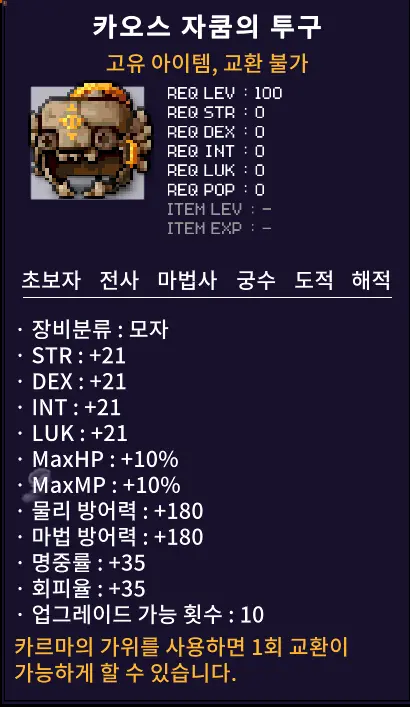
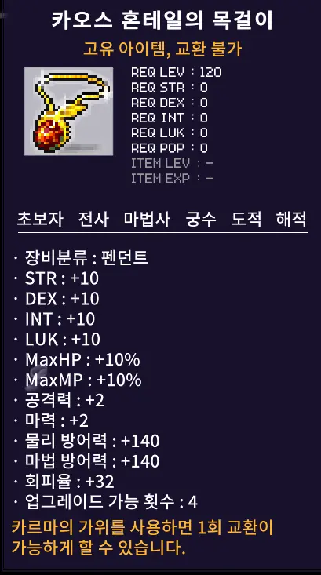
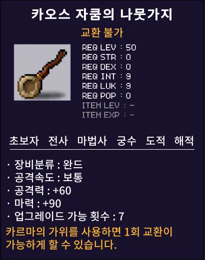

메이플 플래닛 카오스 자쿰·혼테일 공략 총정리 (6/18 신규)
6월 18일 패치로 메이플 플래닛에 카오스 자쿰과 카오스 혼테일이 새로 들어왔습니다. "알 수 없는 힘에 의해 자쿰이 폭주했다"는 문구로 등장한 상위 보스인데, 그냥 일반 보스를 조금 세게 만든 수준이 아니라 속성 반감·방어율 계산 방식·부활 횟수까지 구조가 다릅니다. 직접 들여다본 걸 바탕으로 입장 조건 → 속성 반감 → 방어율 무시 계산 → 신규 장비 → 실전 팁까지 정리했습니다.
최종 업데이트: 2026.07.05

이번 패치로 새로 추가된 카오스 자쿰의 투구입니다. 착용 레벨은 100, 일반 자쿰의 투구보다 스탯대가 확실히 높습니다.
이미지: 메이플 플래닛 공식 패치노트
- 카오스 자쿰: Lv100+·하루 1회·제한 1시간 30분·방어율 60%, 부활 5회(원정대 공유)
- 카오스 혼테일: Lv110+·하루 1회·제한 2시간 30분·방어율 80%, 부활 10회(원정대 공유)
- 둘 다 성·불·얼음·전기·독 5속성 반감 — 속성 딜러는 파티 구성부터 다시 봐야 함
- 방무 계산이 원작과 다름 — 자쿰은 방무 60이면 방어율이 0%로 사라짐
- 보상은 카오스 자쿰의 투구·나뭇가지, 카오스 혼테일의 목걸이
선행퀘부터 입장 구조까지는 일반 보스 공략에서 따로 정리했습니다 → 메이플 플래닛 자쿰 공략 (선행퀘·입장·분배 총정리) / 메이플 플래닛 혼테일 공략 (입장·부위·드래곤의 돌)
일단 짚어둘 게 있습니다. 메이플 플래닛은 사설 서버가 아니라 넥슨의 메이플스토리 월드(MapleStory Worlds) 플랫폼에서 정식 출시된 월드입니다. 패치노트에도 이 부분이 명시돼 있고, 게임 안에서는 빅뱅 이전 감성의 클래식 메이플을 표방합니다. 이 전제를 깔고 봐야 카오스 보스도 헷갈리지 않습니다 — 본섭(넥슨 메이플스토리)의 카오스 자쿰과는 체력·드랍·패턴이 전부 다른, 플래닛 자체 콘텐츠라는 뜻이거든요.
카오스 자쿰과 카오스 혼테일은 일반 자쿰·혼테일보다 한 단계 위에 있는 상위 보스로 추가됐습니다. 입장 조건 자체는 일반 보스와 동일하다고 패치노트에 적혀 있는데요, 정착 조건이 아니라 도전 조건이 달라진다는 이야기입니다. 표로 정리하면 이렇습니다.
| 항목 | 카오스 자쿰 | 카오스 혼테일 |
|---|---|---|
| 입장 레벨 | Lv100 이상 | Lv110 이상 |
| 입장 횟수 | 하루 1회 | 하루 1회 |
| 제한시간 | 1시간 30분 | 2시간 30분 |
| 방어율 | 60% | 80% |
| 속성 반감 | 성·불·얼음·전기·독 | 성·불·얼음·전기·독 |
| 부활(수레바퀴) | 5회, 원정대 공유 | 10회, 원정대 공유 |
| 드랍 | 투구·나뭇가지 | 목걸이 |
카오스 자쿰과 카오스 혼테일은 둘 다 성·불·얼음·전기·독 다섯 속성 공격을 반감시킵니다. 이 다섯 속성 중 하나라도 주력이면 파티에서 그 캐릭터의 딜이 반토막이 난다는 뜻이라, 파티 짤 때 가장 먼저 걸러야 하는 조건입니다.
클래식 직업 기준으로 짚어보면, 아크메이지(불/독)의 불·독 속성기, 플레임위자드의 화염 속성기, 아이스라이트닝 계열의 얼음·전기 스킬이 여기에 걸립니다. 이런 속성 딜러가 파티에 있다면 카오스 보스에서는 서브 무기·오브젝트로 무속성 스킬 비중을 늘리거나, 차라리 무속성·물리 위주 직업으로 파티를 재구성하는 쪽이 효율적입니다. 나이트로드나 히어로 계열처럼 물리·무속성 딜러는 이 페널티에서 자유로우니 카오스전에서 상대적으로 유리한 편입니다.
카오스 보스 공략에서 제일 중요한 건 방어율 무시(방무)입니다. 그런데 메이플 플래닛의 방무 계산 방식은 원작과 다릅니다. 원작은 몹 방어율에서 (보스 방어율 × 방무합)을 빼는 곱연산 방식인데, 메이플 플래닛은 몹 방어율에서 방무합을 그대로 빼는 방식입니다. 이 차이가 실전에서는 꽤 크게 갑니다.
방무 60%를 보유한 경우를 기준으로 실제 계산을 해보면 이렇습니다.
| 보스 | 기본 방어율 | 방무 60% 적용 | 결과 |
|---|---|---|---|
| 카오스 자쿰 | 60% | 60% − 60% | 방어율 0% — 완전 무력화 |
| 카오스 혼테일 | 80% | 80% − 60% | 방어율 20% 남음 |
“자쿰은 방무 60만 채우면 방어율이 사라지지만, 혼테일은 방무를 더 챙길수록 그대로 이득이 됩니다.”
이 계산법이 주는 함의가 명확합니다. 카오스 자쿰은 방무 60%를 채우는 순간 방어율이 완전히 0이 되니, 그 이상 방무를 더 투자하는 건 자쿰전에서는 의미가 없습니다. 남는 잠재·큐브 자원은 공격력이나 보스 공격력 쪽으로 돌리는 게 낫습니다. 반대로 카오스 혼테일은 방어율 80%가 워낙 높아서 방무 60%로도 20%가 그대로 남습니다. 방무를 더 챙길수록 실제 딜에 직결되니, 혼테일을 주력으로 돈다면 방무 세팅을 최대한 끌어올리는 쪽이 이득입니다.
'운명의 수레바퀴'로 부활할 수 있는 횟수가 카오스 자쿰은 5회, 카오스 혼테일은 10회인데, 이게 개인별이 아니라 원정대 전체가 공유하는 횟수라는 걸 꼭 기억해야 합니다. 팔이나 초반 패턴에서 사고로 여러 명이 한꺼번에 죽으면 부활 횟수가 순식간에 줄어들고, 후반 본체 페이즈에서 정작 필요할 때 부활 자원이 남아있지 않아 전멸하는 경우가 생깁니다.
그래서 초반에는 회피 위주로 안전하게 진행하고, 부활은 진짜 필요한 순간(딜러 하나가 죽어서 클리어 타임에 지장이 생길 때)을 위해 아껴두는 편이 낫습니다. 특히 카오스 자쿰은 제한시간이 1시간 30분으로 카오스 혼테일(2시간 30분)보다 짧고 부활도 5회뿐이라, 초반에 몰아 쓰면 후반에 자쿰의 팔·본체 패턴에서 부활 자원이 바닥나는 그림이 나오기 쉽습니다.

카오스 혼테일의 목걸이 툴팁입니다. 보스 입장은 Lv110이지만 착용 레벨은 Lv120이라 헷갈리기 쉽습니다.
이미지: 메이플 플래닛 공식 패치노트
카오스 자쿰·혼테일이 떨어뜨리는 장비는 총 3종입니다. 셋 다 고유·교환불가 아이템이라 본인이 직접 착용할 목적이 아니면 카르마의 가위로 1회 교환해 거래해야 합니다. 툴팁 옵션을 표로 정리했습니다.
| 아이템 | 착용 REQ | 주요 옵션 |
|---|---|---|
| 카오스 자쿰의 투구 | Lv100 · 전직업 | 올스탯 +21, MaxHP/MP +10%, 물방·마방 +180, 명중·회피 +35, 업그레이드 10회 |
| 카오스 혼테일의 목걸이 | Lv120 · 전직업 | 올스탯 +10, MaxHP/MP +10%, 공격력·마력 +2, 물방·마방 +140, 회피 +32, 업그레이드 4회 |
| 카오스 자쿰의 나뭇가지 | Lv50 · 마법사 | 공격력 +60, 마력 +90, REQ INT/LUK 9, 공속 보통, 업그레이드 7회 |

카오스 자쿰의 나뭇가지입니다. 완드 계열이라 마법사 전용이고, 착용 레벨이 50으로 낮은 편이라 눈에 띕니다.
이미지: 메이플 플래닛 공식 패치노트
투구는 전 직업 국민템 자리를 노리는 물건입니다. 일반 자쿰의 투구보다 올스탯·방어력·명중·회피가 전부 오른 상위 버전이고, 업그레이드 가능 횟수도 10회로 넉넉합니다. 목걸이는 방어력·회피 옵션이 두툼한 데다 드래곤의 돌을 사용할 수 있다는 점이 큽니다. 나뭇가지는 완드라 마법사 한정이지만, 착용 레벨이 50으로 낮아서 마법사 직업이라면 초중반부터 오래 들 수 있는 무기입니다. 신규 아이템인 만큼 아직 시세가 형성되지 않았으니, 팔 계획이라면 경매장 시세를 먼저 확인하고 움직이시는 게 안전합니다.
6월 23일 패치로 카오스 자쿰의 몸체가 새로운 패턴을 쓰기 시작했습니다. 운영진 공지에 따르면 원작 빅뱅 이후에 추가됐던 패턴들을 플래닛 난이도에 맞춰 몸체가 사용하도록 반영했다고 하는데요. 실전에서 조심해야 할 패턴을 정리하면 이렇습니다.
| 패턴 | 대처 |
|---|---|
| 유혹 | 캐릭터 조작이 일시적으로 뒤틀리는 패턴 — 걸리는 순간 공격 버튼에서 손을 떼고 상황부터 파악 |
| 물약 봉인 | HP·MP 물약이 막히는 패턴 — 평소보다 HP 여유를 크게 잡아두고 입장하는 게 핵심 |
| 언데드 | 몸체가 언데드 속성으로 바뀌는 패턴 — 이 구간엔 성속성 공격이 오히려 더 잘 먹히니 타이밍 조절 |
| 방향키 전환 | 조작 방향키가 반대로 뒤집히는 패턴 — 낙사·공격 판정에 그대로 걸리는 실수가 잦으니 침착하게 반응 |
| 어둠의 그림자 | 시야를 가리는 패턴 — 몸체 위치·다음 패턴 예측이 어려워지니 무빙을 크게 줄이고 안전권 위주로 대응 |
지금까지 다룬 내용을 실전 체크리스트로 압축하면 다음과 같습니다.
| 순번 | 체크 포인트 |
|---|---|
| 1 | 성·불·얼음·전기·독 딜러는 파티 구성 전에 미리 체크(딜 반토막 감안) |
| 2 | 방무 세팅은 자쿰=60% 채우면 끝, 혼테일=최대한 챙길수록 이득 |
| 3 | 부활(수레바퀴)은 원정대 공유 — 초반에 몰아 쓰지 말고 후반을 위해 아껴두기 |
| 4 | 하루 1회·제한시간 존재 — 실패하면 그날은 재도전 불가, 스펙·파티 확실히 갖추고 입장 |
| 5 | 자쿰 몸체는 물약 봉인·방향키 전환 위주로 HP 여유와 회피 우선 |
참고로 카오스 보스 입장조건은 일반 보스와 동일하다고 패치노트에 명시돼 있어서, 이미 일반 자쿰·혼테일을 뚫어놓은 분들은 선행퀘를 다시 밟을 필요는 없어 보입니다. 처음 도전하는 거라면 위에 걸어둔 시리즈 링크의 선행퀘 공략을 먼저 보고 오시는 걸 추천합니다.
결국 이번 카오스 자쿰·혼테일은 5속성 반감과 플래닛 고유 방무 계산(보스 방어율에서 방무합을 그대로 빼는 방식), 이 두 가지를 이해하고 들어가느냐가 클리어 시간을 가른다고 봅니다. 자쿰은 방무 60%로 방어율을 완전히 지워버리고, 혼테일은 반대로 방무를 최대한 챙길수록 그대로 이득이 되는 구조라 두 보스 세팅 방향이 갈립니다. 부활(수레바퀴)은 원정대 전체가 공유하는 자원이니 초반에 함부로 쓰지 말고 후반 페이즈를 위해 아껴두는 습관을 들이시길 바랍니다. 일반 자쿰·혼테일을 이미 뚫어놓은 분들이라면 다음 목표로 카오스 보스를 노려볼 만한 타이밍입니다. 카오스 보스 공략은 여기서 마무리하겠습니다.